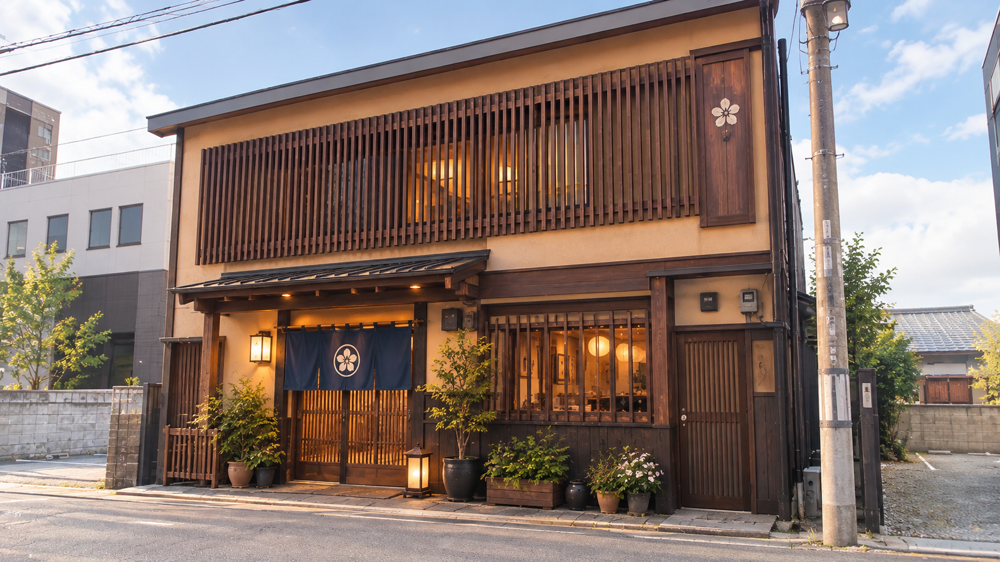
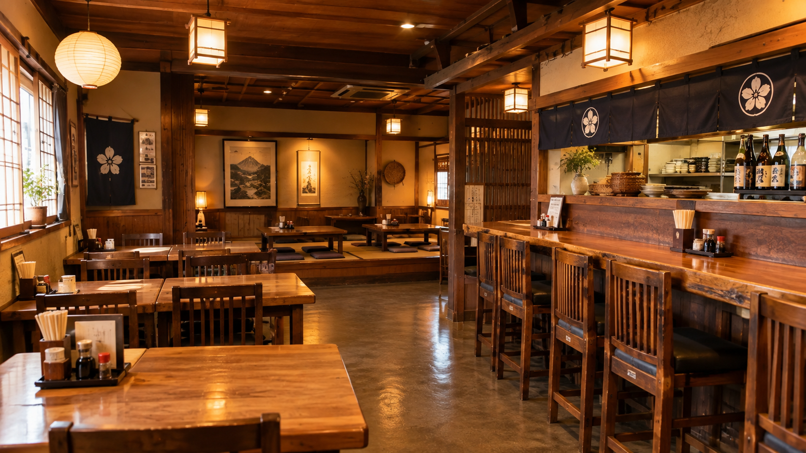

そば処 品川家 SOBADOKORO SHINAGAWAYA
名物は、郷土色のある温かい麺料理「しっぽこ」。
そば、うどん、納豆きしめん、中華そばまで。
昔ながらの落ち着いたそば店です。
品川家とは
山形市役所裏にある、昔ながらの落ち着いたそば店。
そば・うどん・ラーメン・定食と、幅広い麺料理が揃います。
名物として紹介される郷土色のある麺料理「しっぽこ」。
そばだけでなく、納豆きしめんや中華そばなど、
幅広い麺料理を楽しめるのが品川家の特徴です。
名物 しっぽこ
郷土色のある、温かい汁物系の麺料理。品川家の名物として紹介されています。
幅広い麺料理
もりそば、天もり、納豆きしめん、中華そば、各種うどんなど多彩に揃います。
昔ながらの店内
テーブル席と小上がりの座敷席。落ち着いた雰囲気のそば店です。
しっぽこ（すっぽこ）
品川家の名物として紹介される、郷土色のある麺料理。
寒い季節にも楽しみやすい、温かい汁物です。

しっぽこ
品川家の名物
品川家の名物として紹介されている、郷土色のある麺料理です。一般的なそば店の定番メニューとは一味違う、ここならではの一品として親しまれています。
寒い季節にも楽しみやすい、温かい汁物系のメニューとして、地域の情報サイトでも紹介されています。
-
01
品川家の名物、郷土色のある麺料理
一般的なそば店とは一味違う、郷土色のある一品です。
-
02
寒い季節にもうれしい温かい汁物
温かい汁物系のメニューとして、地域の情報サイトで紹介されています。
-
03
そば以外の麺料理も幅広く
しっぽこのほか、納豆きしめん、中華そばなど多彩な麺料理が揃います。
ご利用シーン
昼の食事に、寒い日のあたたまりに。
こんな時にご利用ください。
ランチに
月〜土の昼営業。予算は約1,000円前後。山形市役所裏で、気軽にお食事できます。
座敷でゆっくり
テーブル席のほか、小上がりの座敷席もあります。落ち着いた店内で。
寒い日に
温かい汁物系のしっぽこは、寒い季節にも楽しみやすい一品です。
郷土の味を知りたい時に
郷土色のあるしっぽこは、品川家の名物。山形らしい味を試したい方に。
お店の様子
昔ながらの落ち着いたそば店。
テーブル席と小上がりの座敷席でお待ちしています。


店舗情報
山形市旅篭町、山形市役所裏。
月〜土の昼営業、日曜定休です。
営業案内
※料理L.O. 14:20
※詳しくは店舗へお問い合わせください
アクセス
山形県山形市旅篭町2丁目1-26
JR北山形駅から約1,226m、徒歩約20分
駐車場の有無、お支払い方法については確認できておりません。お車でのご来店やカード・電子マネーをご利用の方は、事前に店舗へお問い合わせください。
ご来店お待ちしております
名物は、郷土色のある温かい麺料理「しっぽこ」。
そばも、納豆きしめんも、中華そばも。
山形市役所裏の昔ながらのそば店で、お待ちしています。
※営業時間: 月〜土 11:30〜14:30（料理L.O. 14:20）
※定休日: 日曜日／予約不可との情報あり
※駐車場・お支払い方法は事前に店舗へご確認ください